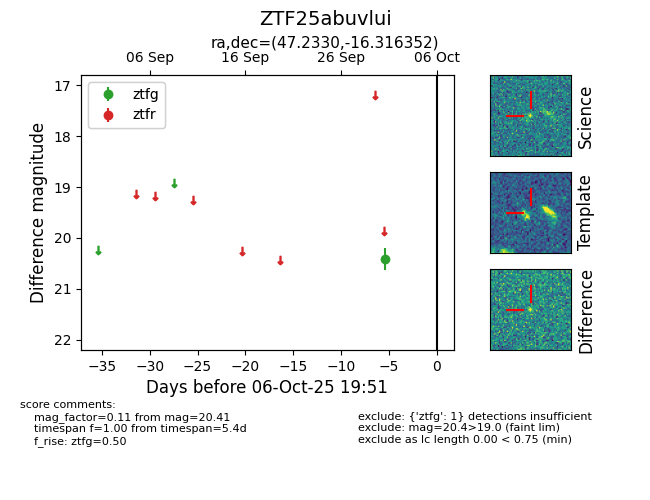

FINK: ZTF25abuvlui
Lasair: ZTF25abuvlui
ALeRCE: ZTF25abuvlui
ZTF25abuvlui (ztf,fink)
equatorial (ra, dec) = (47.2330,-16.31635)
galactic (l, b) = (201.3379,-56.41780)

last ztfg=20.41
1 ztfg detections